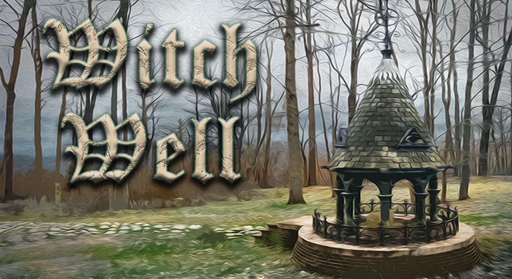

Witch Well
Game Desciption
The goal of this project is to create a challenging story driven platformer where your choices within the game can affect the outcome of certain aspects of future events. You will traverse a medieval-esk environment with towering castles and twisting forests for you to explore and traverse. Engage in battles against multiple bosses such as egregious guardsmen who prevent you from advancing to heinous witches who wish to capture you. Advance forward and challenge these foes who will progressively get more and more difficult up until the final boss where all the choices you made will be weighted on your back.
The entire game will revolve around the weapon provided to you being the Omni Gun. This weapon will not only help you traverse through the world but will be your main way of defending yourself. As the game progresses you will unlock slots within your weapon that can upgrade certain aspects of it, such as an extra jump, more damage, an invincibility dash, or maybe even homing bullets. These upgrades will even synchronize with each other to add bonus effects. By the final fight against the king you will only ever be able to have 3 upgrades on at once, but there have been stories of somehow combining them all.
Story
You awake in a cave unknown to you with nothing in your possession and are completely lost. You are eventually approached by a random stranger who helps train you to hopefully save his world. They provide you with the omni blaster and this new tool soon becomes almost a part of you as you use it to both traverse this place and defeat enemies along the way. Without notice or warning, the king had changed his lovable tune and became a full on tyrant, so it is up to you to find out what has caused him to shift colors so fast and put a stop to it! Only you can save this land.
Game Engine: Unity 2022 Editor
Year: 2023-2024
Created for: Senior Project
Team size: 1